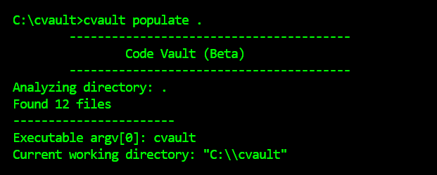
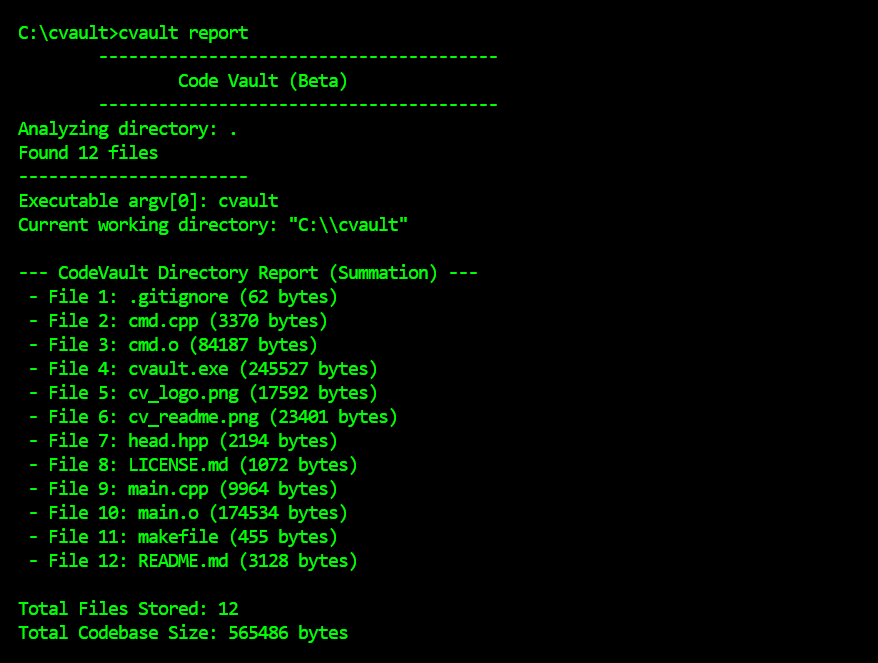
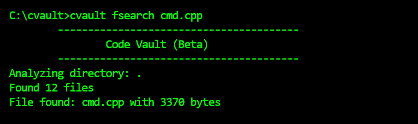
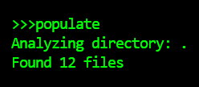
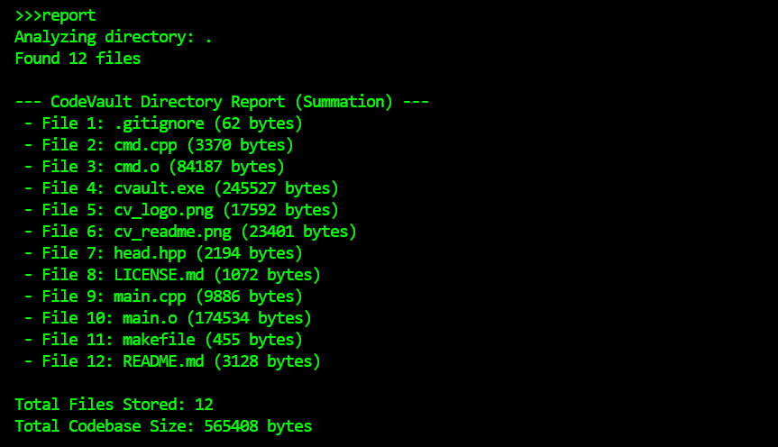
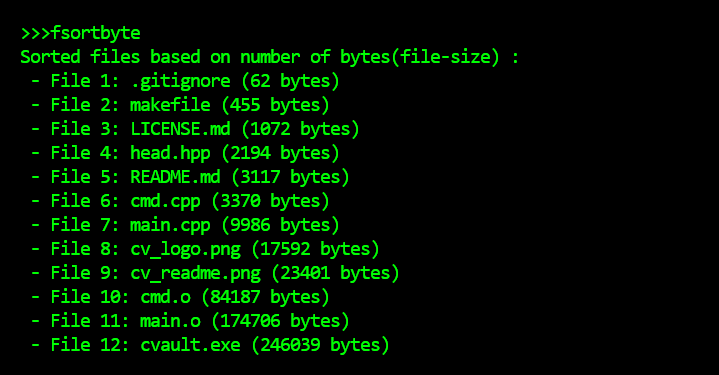
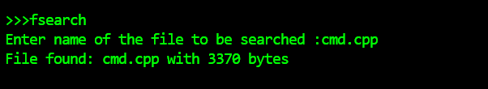
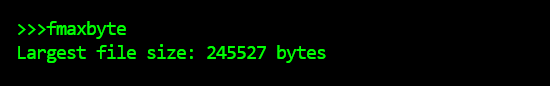
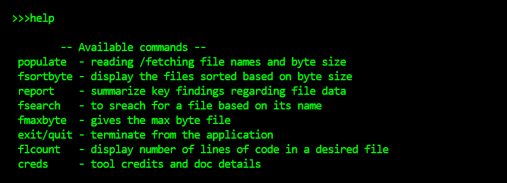
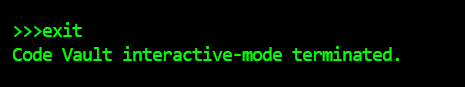

1. Project Overview
A CLI based static code analyzer with file analysis. Made from pure C++ with object-oriented paradigm. Easy to use and fast as flash!.
The project supports two main operational modes:
- Interactive Mode: For continuous exploration and analysis.
- Command Line Mode (CLI): For quick, one-off commands and scripting.
2. Installation & Setup
1. Clone the repository:
git clone https://github.com/tecnolgd/cvault
2. Open the codevault folder:
cd cvault
2.1 Prerequisites
[PLACEHOLDER: List any required dependencies, like compiler version, runtime environment, or libraries.]
1. Compiler: g++
2. Recommended terminal: cmd
3. Libraries: Not required 💀
4.
2.2 Compilation / Build
Use the following command to build the executable:
Compilation:
* g++ main.cpp cmd.cpp -o cvaultFor manual build
* mingw-32 makeFor makefile build(recommended)
Build:
* cvault.exe or simply cvault (For windows)
* ./cvault (For linux/mac)
3. Feature Reference
[Command line Mode]
3.1. cvault populate <path>
This command is used to scan for the directory for files. If directory name is not specified, it scans the directory in which Code Vault is opened.
cvault populate .
3.2. report
This command is used to display all the files in the scanned directory.
The report by default scans the directory in which Code Vault is opened unless stated in the cvault report <directoryName> otherwise.
cvault report . //report generation for the current directory.
3.3. fsearch <filename>
This command is used to search a file in the scanned/populated directory. The search functionality happens based on file name. Note that fsearch doesn't work for executables or object files.
cvault search filename
3.4.cvault fsortbyte <path> or simply cvault fsortbyte
This command is used to sort the files(including executables, object files, etc.) in increasing order of no of bytes in the file or simply based on the size of the file.
cvault fsortbyte<directory> otherwise.
cvault fsortbyte . //file sort for the current directory.4. Interactive Mode commands
populate: To populate / scan the directoryreport: To display the scanned directory reportfsortbyte: To sort the files based on file sizefsearch: To search for a file in the scanned directoryfmaxbyte: To find the largest file(based on size)creds: To display credits and doc linkshelp: To display commands and their meaningsexit/quit: To exit/ quit the application







5. How to run?
## How to run ?🔛 1. Clone the repository :git clone https://github.com/tecnolgd/cvault2. Open the folder :cd cvault2) Run with * ### Makefile (*Recommended*) 1. Open terminal in thecvaultfolder. 2. Runmingw32-make //for windows/make //for linux/ios. 3. An executabe file calledcvault.exe/cvalut.owould be formed. 4. Run the command * for Interactive mode: Use cvault.exe //for windows or simply ***`cvault`*** Use ***`./cvault`***(for linux/ios) in the terminal. * for **Command-line** mode: Directly type the suitable commands on the terminal interface. *(Note: Run ***`mingw32-make clean`*** or ***`make clean`*** to clear object files based on OS)* 5. The application will open for user interaction. --- * ### g++(*Manual way / for beginners*) 1. Open the terminal in the **cvault** folder. 2. Run ```bash g++ main.cpp cmd.cpp -o cvault ``` 3. An executable file called ***`cvault.exe`*** would be formed. 4. Run the command ***`cvault.exe`***or simply ***`cvault`***(windows) or ***`./cvault`***(linux/ios) in the terminal. (same as Makefile step-4). 5. The application will start its execution.